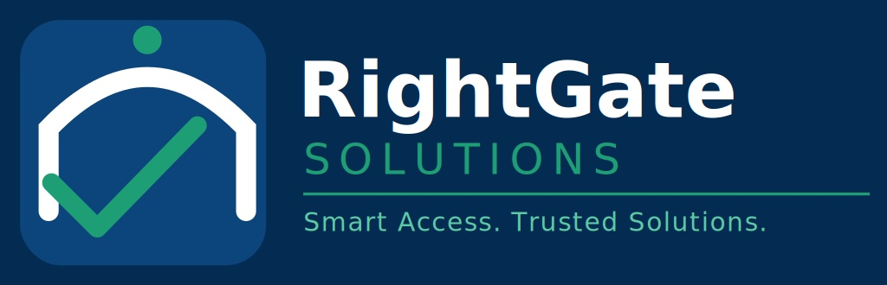

Phase 1: Foundation Architecture
Organizing foundational core team layers, establishing project tracking parameters, and deploying initial asset grids[cite: 1].

Architecting robust software engineering pathways and cultivating the next wave of tech innovators[cite: 1].
Bridging the operational gap between abstract computer science theory and production deployment parameters is critical. Developed out of Haramaya University, simple RG solution serves as an innovation ecosystem and engineering pipeline[cite: 1]. We design distributed database structures, compile safe back-end algorithmic tools, and manage clean multi-device web deployments ready for organizational tracking[cite: 1].
Cultivating localized professional workflows across comprehensive software engineering frameworks[cite: 1].
Engineering modern user interfaces driven by structured relational frameworks, validation blocks, and clean script automation styles[cite: 1].
Analyzing isolated subnets, processing metric IP routing maps, and hardening technical logical parameters against external vectors[cite: 1].
Formulating balanced vector systems, crisp geometric logo frameworks, and unified corporate color standards[cite: 1].
Executing thorough analytical entry evaluations to align developer potential with specialized code project tracks[cite: 1].
Building live code layers inside distributed environments to master team alignment metrics and version control systems[cite: 1].
Issuing validated skill endorsements and opening secure paths to production software engineer career tracks[cite: 1].
Organizing foundational core team layers, establishing project tracking parameters, and deploying initial asset grids[cite: 1].
Running technical sprint frameworks, expanding backend database features, and initializing responsive web apps[cite: 1].
Broadening external database connections, managing remote deployment platforms, and optimizing custom enterprise software systems[cite: 1].